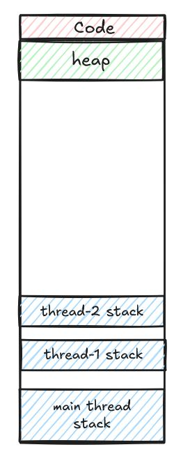

1. Thread stacks
Consider the simple multi-threaded program here; each thread increments the shared global variable counter max number of times (we won’t write a program this way to accomplish this, but it’s good to highlight the issue). Global variable is one way to share data between threads. Can we now refactor the program to make counter a local variable in main()?
To answer this question, we first need to think how we’re going to now pass 2 arguments to the thread - the identifier string ("A" or "B") and a pointer to counter. This is relatively easy - we simply package them in a user-defined struct and pass a pointer to the struct to the thread.
typedef struct {
char *id;
volatile int counter;
int max;
} thread_args;We know that threads share the same address space, but each thread has its own stack. Can a thread access a struct variable stored on the stack of the main thread? This issue did not arise when originally we were passing the string literal "A" or "B" because they are stored in the read-only part of the address space; this segment is shared by all threads.
The answer is technically yes, another thread can access the struct variable stored on the stack of the main thread. This is possible here only because main() uses pthread_join() for proper sequencing that makes stack data sharing safe. So when a child thread p1 or p2 executes, the stack frame of main() is guaranteed to to exist. The refactored program would look something like this.

2. Locks and a Concurrency Bug
We use locks when updating shared variables or memory locations in a multi-threaded program. This provides mutual exclusion and is crucial to the correctness of the program. What happens when we make a function call within a critical section protected by a lock, such as here?
The function do_something() is called from within the critical section protected by a lock. This will behave just fine. A thread will execute do_something() while still holding the lock. It’s not necessary that the compiler will inline the function within the critical section. So jumps from the lines delineated within lock() and unlock() are possible, provided we come back to the same critical section. This is not ideal, because we usually try to keep critical sections small and protect only the lines where shared memory is updated.
A serious concurrency bug occurs when we have a goto statement within a critical section and it jumps to a location outside that section. In this case, unlock() is not called by the executing thread; other threads never get a chance to acquire the lock and wait perpetually.
pthread_mutex_lock(&lock);
balance = balance + 1;
if (some_condition)
goto outside_lock;
pthread_mutex_unlock(&lock);
outside_lock:
do_something();It’s a nasty bug which can be difficult to diagnose. The compiler will certainly not flag this, but static analysis tools can. Moral of the story: avoid goto entirely in concurrent code.
Thanks to Subham and Moti Rattan for posing doubts in my OS class; those led to these observations.